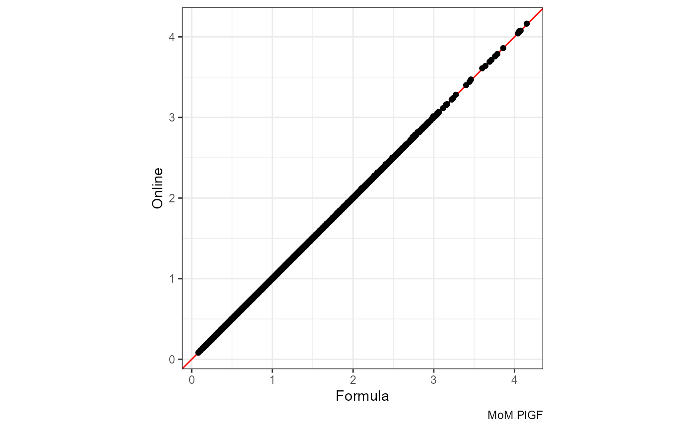

Validation
validation.RmdValidation
Please note: The validation data are attached with pre-calculated
risk scores and can be loaded with the function
get_validation_data()
To ensure correspondence between values calculated offline and online, a validation data set of 5000 women was generated to cover a wide range of possible combinations:
# Function to generate random samples from a parameter space
sample_parameter_space <- function(parameter_ranges, n_samples = 2500) {
# parameter_ranges should be a list where each element is either:
# - a vector of discrete values to sample from
# - a numeric vector of length 2 specifying [min, max] for continuous variables
# Initialize result dataframe
result <- data.frame(matrix(nrow = n_samples, ncol = length(parameter_ranges)))
names(result) <- names(parameter_ranges)
# Sample each parameter
for (param_name in names(parameter_ranges)) {
param_range <- parameter_ranges[[param_name]]
if (length(param_range) == 2 && is.numeric(param_range)) {
# Continuous parameter: sample uniformly between min and max
result[[param_name]] <- runif(n_samples, min = param_range[1], max = param_range[2])
} else {
# Discrete parameter: sample with replacement from provided values
result[[param_name]] <- sample(param_range, n_samples, replace = TRUE)
}
}
return(result)
}
parameter_ranges <- list(
# Pregnancy Details
twins = "no",
crl1 = NA,
crl2 = NA,
crl = 50,
ga = c(11.3, 14),
ga_at = "01-01-2024",
# Maternal Characteristics
dob = paste0("01-01-", seq(1985, 2006)),
height = c(150, 190),
weight = c(40, 180),
race = c(1, 2, 3, 4, 5),
smoking = c("yes", "no", "no"),
mother_pe = c("yes", "no", "no"),
conception = c(1, 1, 1, 1, 2, 3),
# Medical History
chronic_hypertension = c("yes", "no", "no", "no", "no"),
diabetes_type_i = c("yes", "no", "no", "no", "no"),
diabetes_type_ii = c("yes", "no", "no", "no", "no"),
diabetes_drugs = c("diet only", "insulin", "insulin+metformin", "metformin"),
sle = c("yes", "no", "no", "no", "no", "no", "no", "no", "no", "no"),
aps = c("yes", "no", "no", "no", "no", "no", "no", "no", "no", "no"),
# Obstetric History
previous = "no",
previous_pe = NA,
previous_delivered_at = NA,
previous_ga_weeks = NA,
previous_ga_days = NA,
previous_interval = NA,
# Biophysical Measurements
map = c(60, 100),
utpi = c(0.8, 3),
biophysical_at = "01-01-2024",
# Biochemical Measurements
include_plgf = "raw",
include_pappa = "no",
plgf_mom = NA,
plgf = c(10, 80),
plgf_machine = c("delfia", "kryptor", "roche"),
pappa_mom = NA,
pappa = NA,
pappa_machine = NA,
biochemical_at = "01-01-2024"
)
# Generate 2250 random parameter combinations, primipara
samples <- data.table(sample_parameter_space(parameter_ranges, n_samples = 2250))
# Generate 500 random parameter combinations, primipara, custom MoM-PlGF
parameter_ranges$include_plgf <- "mom"
parameter_ranges$plgf <- NA
parameter_ranges$plgf_machine <- NA
parameter_ranges$plgf_mom <- c(0.5, 2.5)
samples <- rbind(samples,
data.table(sample_parameter_space(parameter_ranges, n_samples = 500)))
# Generate 2250 random parameter combinations, multipara
parameter_ranges$include_plgf <- "raw"
parameter_ranges$plgf <- c(10, 80)
parameter_ranges$plgf_machine <- c("delfia", "kryptor", "roche")
parameter_ranges$plgf_mom <- NA
parameter_ranges$previous <- "yes"
parameter_ranges$previous_pe <- c("yes", "no", "no")
parameter_ranges$previous_delivered_at <- paste0("01-01-", seq(2000, 2023))
parameter_ranges$previous_ga_weeks <- seq(24, 41)
parameter_ranges$previous_ga_days <- seq(0, 6)
samples <- rbind(samples,
data.table(sample_parameter_space(parameter_ranges, n_samples = 2250)))
# Add ID column
samples[, id := .I]
# Adjust parameters
samples[, crl := 50]
samples[diabetes_type_i == "yes", diabetes_type_ii := "no"]
samples[diabetes_type_ii == "no", diabetes_drugs := "no"]
samples <- samples[sample(seq(1, nrow(samples)), nrow(samples))]
# Remove either PlGF, MAP or UtAPI from a subsample, n = 1000
rows_to_select_from <- samples[include_plgf == "raw", id]
selected_rows <- sample(rows_to_select_from, 1000)
for (i in selected_rows) {
remove_measurement <- sample(c("MAP", "UtAPI", "PlGF"), 1)
if (remove_measurement == "MAP") {
samples[id == i, map := NA]
}
if (remove_measurement == "UtAPI") {
samples[id == i, utpi := NA]
}
if (remove_measurement == "PlGF") {
samples[id == i, plgf := NA]
samples[id == i, include_plgf := "no"]
samples[id == i, plgf_machine := NA]
samples[id == i, biochemical_at := NA]
}
}
# Introduce a few days delay in one of the dates, n = 500 for each
rows_to_select_from <- samples[!is.na(biochemical_at) & ga > 12 & ga < 13, id]
selected_rows <- sample(rows_to_select_from, 500)
for (i in selected_rows) {
samples[id == i, biochemical_at := paste0(sample(seq(25, 31), 1), "-12-2023")]
}
rows_to_select_from <- samples[!is.na(biophysical_at) & ga > 12 & ga < 13, id]
selected_rows <- sample(rows_to_select_from, 500)
for (i in selected_rows) {
samples[id == i, biophysical_at := paste0(sample(seq(25, 31), 1), "-12-2023")]
}
fwrite(samples, file = "data_validation.csv")
remove(samples)We then acquire risk scores using the formulas:
df <- fread("data_validation.csv")
k <- calculate_pe_risk(
df,
method = "formula",
report_as_text = TRUE,
G = 37
)
fwrite(k, file = "data_validation_analytical.csv")
remove(k)Finally, we acquire risk scores using the online calculator:
l <- calculate_pe_risk(
df, method = "online",
report_as_text = TRUE,
G = 37,
save_responses = TRUE
)
fwrite(l, file = "data_validation_online.csv")
remove(l)To compare the two sets of risk scores, we merge them:
dfk <- fread("data_validation_analytical.csv")
dfl <- fread("data_validation_online.csv")
df <- merge(
dfk,
dfl[, .(id, mom_MAP, mom_PI, mom_PlGF, risk_prior, risk)],
by = "id"
)Comparison of formula vs online calculations
The validation data are attached with pre-calculated risk scores and
can be loaded with the function get_validation_data():
df <- get_validation_data()
df[, risk.x := as.numeric(gsub("1 in ", "", risk.x))]
df[, risk.y := as.numeric(gsub("1 in ", "", risk.y))]Here, risk.x is based on the formula and
risk.y is based on online calculations.
MoM MAP
The red line is x = y:
ggplot(df, aes(mom_MAP.x, mom_MAP.y)) +
geom_abline(slope = 1, color = "red") +
geom_point() + coord_equal() +
labs(x = "Formula", y = "Online", caption = "MoM MAP")
#> Warning: Removed 318 rows containing missing values or values outside the scale range
#> (`geom_point()`).Mean vs Difference:
ggplot(df, aes((mom_MAP.x + mom_MAP.y) / 2, mom_MAP.y - mom_MAP.x)) +
geom_point() +
labs(x = "Mean", y = "Difference", caption = "MoM MAP")
#> Warning: Removed 318 rows containing missing values or values outside the scale range
#> (`geom_point()`).Difference:
ggplot(df, aes(mom_MAP.y - mom_MAP.x)) +
geom_density() +
labs(x = "Online - Formula", y = "Density", caption = "MoM MAP")
#> Warning: Removed 318 rows containing non-finite outside the scale range
#> (`stat_density()`).Note that the difference becomes even smaller if we round the formula-based values to three decimals:
ggplot(df, aes((round(mom_MAP.x, 3) + mom_MAP.y) / 2, mom_MAP.y - round(mom_MAP.x, 3))) +
geom_point() +
labs(x = "Mean", y = "Difference", caption = "MoM MAP")
#> Warning: Removed 318 rows containing missing values or values outside the scale range
#> (`geom_point()`).
ggplot(df, aes(mom_MAP.y - round(mom_MAP.x, 3))) +
geom_density() +
labs(x = "Online - Formula", y = "Density", caption = "MoM MAP")
#> Warning: Removed 318 rows containing non-finite outside the scale range
#> (`stat_density()`).MoM UtAPI
The red line is x = y:
ggplot(df, aes(mom_PI.x, mom_PI.y)) +
geom_abline(slope = 1, color = "red") +
geom_point() + coord_equal() +
labs(x = "Formula", y = "Online", caption = "MoM UtAPI")
#> Warning: Removed 672 rows containing missing values or values outside the scale range
#> (`geom_point()`).Mean vs Difference:
ggplot(df, aes((mom_PI.x + mom_PI.y) / 2, mom_PI.y - mom_PI.x)) +
geom_point() +
labs(x = "Mean", y = "Difference", caption = "MoM UtAPI")
#> Warning: Removed 672 rows containing missing values or values outside the scale range
#> (`geom_point()`).Difference:
ggplot(df, aes(mom_PI.y - mom_PI.x)) +
geom_density() +
labs(x = "Online - Formula", y = "Density", caption = "MoM UtAPI")
#> Warning: Removed 672 rows containing non-finite outside the scale range
#> (`stat_density()`).Round to three decimals:
ggplot(df, aes(mom_PI.y - round(mom_PI.x, 3))) +
geom_density() +
labs(x = "Online - Formula", y = "Density", caption = "MoM UtAPI")
#> Warning: Removed 672 rows containing non-finite outside the scale range
#> (`stat_density()`).MoM PlGF
The red line is x = y:
ggplot(df, aes(mom_PlGF.x, mom_PlGF.y)) +
geom_abline(slope = 1, color = "red") +
geom_point() + coord_equal() +
labs(x = "Formula", y = "Online", caption = "MoM PlGF")
#> Warning: Removed 334 rows containing missing values or values outside the scale range
#> (`geom_point()`).
Mean vs Difference:
ggplot(df, aes((mom_PlGF.x + mom_PlGF.y) / 2, mom_PlGF.y - mom_PlGF.x)) +
geom_point() +
labs(x = "Mean", y = "Difference", caption = "MoM PlGF")
#> Warning: Removed 334 rows containing missing values or values outside the scale range
#> (`geom_point()`).Difference:
ggplot(df, aes(mom_PlGF.y - mom_PlGF.x)) +
geom_density() +
labs(x = "Online - Formula", y = "Density", caption = "MoM PlGF")
#> Warning: Removed 334 rows containing non-finite outside the scale range
#> (`stat_density()`).Prior risk
The red line is x = y:
ggplot(df, aes(nrisk_prior.x, nrisk_prior.y)) +
geom_abline(slope = 1, color = "red") +
geom_point() + coord_equal() +
scale_x_log10() + scale_y_log10() +
labs(x = "Formula", y = "Online", caption = "Prior risk")Mean vs Difference:
ggplot(df, aes((nrisk_prior.x + nrisk_prior.y) / 2, nrisk_prior.y - nrisk_prior.x)) +
geom_point() + scale_x_log10() +
labs(x = "Mean", y = "Difference", caption = "Prior risk")
ggplot(df, aes((nrisk_prior.x + nrisk_prior.y) / 2, abs(nrisk_prior.y - nrisk_prior.x))) +
geom_point() + scale_x_log10() + scale_y_log10() +
labs(x = "Mean", y = "Abs. Difference", caption = "Prior risk")
#> Warning in scale_y_log10(): log-10 transformation introduced
#> infinite values.Difference:
ggplot(df, aes(nrisk_prior.y - nrisk_prior.x)) +
geom_density() +
labs(x = "Online - Formula", y = "Density", caption = "Prior risk")Risk score
The red line is x = y:
ggplot(df, aes(nrisk.x, nrisk.y)) +
geom_abline(slope = 1, color = "red") +
geom_point() + coord_equal() +
scale_x_log10() + scale_y_log10() +
labs(x = "Formula", y = "Online", caption = "Risk score")
#> Warning in scale_x_log10(): log-10 transformation introduced
#> infinite values.Mean vs Difference:
ggplot(df, aes((nrisk.x + nrisk.y) / 2, nrisk.y - nrisk.x)) +
geom_point() + scale_x_log10() +
labs(x = "Mean", y = "Difference", caption = "Risk score")
ggplot(df, aes((nrisk.x + nrisk.y) / 2, abs(nrisk.y - nrisk.x))) +
geom_point() + scale_x_log10() + scale_y_log10() +
labs(x = "Mean", y = "Abs. Difference", caption = "Risk score")
#> Warning in scale_y_log10(): log-10 transformation introduced
#> infinite values.Difference:
ggplot(df, aes(nrisk.y - nrisk.x)) +
geom_density() +
labs(x = "Online - Formula", y = "Density", caption = "Risk score")I guess some of this is related to rounding (it makes a big impact whether it is “1 in 3†vs “1 in 4â€)
The most important thing, however, is related to the threshold of 1/100: